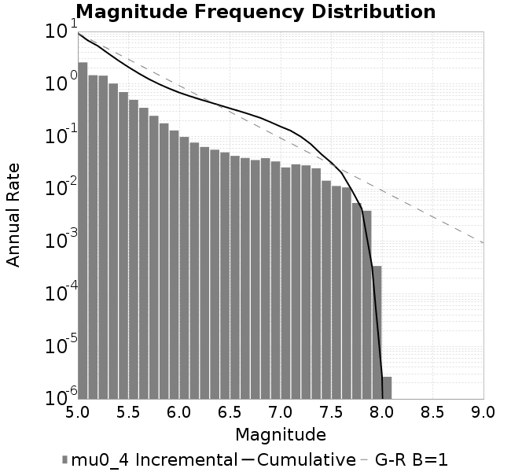
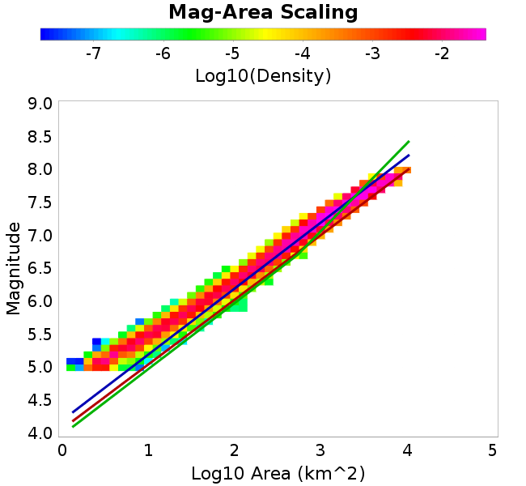
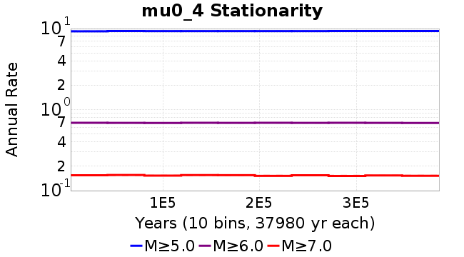

| Catalog | mu0_4 |
|---|---|
| Author | Jaqcui Gilchrist, 2018/09/27 |
| Description | change mu0: mu0=0.4 |
| Fault/Def Model | Fault Model 3.1, Geologic |
| Slip Velocity | 1.0 m/s |
| Average Element Area | 1.35 km^2 |
| Length | 7,684,499 events in 384,803 years |
| Frictional Params | a=0.001, b=0.008, (b-a)=0.007, ddotEQ=1 |

| Scatter | 2-D Hist |
|---|---|
|  |
| Scatter | 2-D Hist |
|---|---|
 |  |
| Scatter |  |
|---|---|
| Distance/Velocity |  |
| M≥6 | M≥6.5 | M≥7 | M≥7.5 |
|---|---|---|---|
 |  |  |
| M≥6 | M≥6.5 | M≥7 | M≥7.5 | |
|---|---|---|---|---|
| Elements | ||||
| Subsections |  |  |  |  |
| Sections |  |

| Min Mag | Scatter | 2-D Hist |
|---|---|---|
| M≥6.0 |  |  |
| M≥6.5 |  |  |
| M≥7.0 |  | |
| M≥7.5 |  |  |
Subsections participate in a rupture if at least 20.0 % of its area ruptures
| Min Mag | Scatter | 2-D Hist |
|---|---|---|
| M≥6.0 | ||
| M≥6.5 |  | |
| M≥7.0 |  |  |
| M≥7.5 |  |
These plots use the 5 paleoseismic sites identified in Biasi & Scharer (2019) on the Hayward, N. SAF, S. SAF, and SJC faults. By default, a rupture is counted at a paleo site if the nearest element (at the surface) slips any amount. We also alternatively apply a probability of detection model. Those results are marked as 'Prob. Filtered'.
Paleoseismic sites table:
| Site Name | Data MRI (yr) | Data Annual Rate | Catalog MRI (yr) | Catalog Annual Rate | Catalog Occurences | Prob Filtered Catalog MRI (yr) | Prob Filtered Catalog Annual Rate | Prob Filtered Catalog Occurences |
|---|---|---|---|---|---|---|---|---|
| HOG | 191.00 | 0.005235602 | 345.40 | 0.0028951569 | 1099 | 349.82 | 0.0028586395 | 1085.12 |
| FRA | 119.00 | 0.008403362 | 115.75 | 0.008639278 | 3282 | 120.98 | 0.008265936 | 3140.17 |
| COA | 181.00 | 0.005524862 | 178.48 | 0.0056028655 | 2128 | 190.21 | 0.0052573504 | 1996.81 |
| SCZ | 106.00 | 0.009433962 | 108.38 | 0.00922646 | 3505 | 130.08 | 0.007687813 | 2920.47 |
| TYS | 329.00 | 0.0030395137 | 318.33 | 0.0031413783 | 1192 | 356.26 | 0.0028069264 | 1064.94 |
| TOTAL | 31.61 | 0.0316373 | 33.89 | 0.029503927 | 11206 | 37.23 | 0.026863322 | 10203.12 |
Paleoseismic Plots:
 |
|---|
Open interval probabilities table:
| Open Interval (yr) | Catalog Probability | Catalog Poisson Probability | Prob. Filtered Catalog Probability | Prob. Filtered Catalog Poisson Probability | Data Poisson Probability |
|---|---|---|---|---|---|
| 10.00 | 0.9694035 | 0.74450237 | 0.9745061 | 0.76442355 | 0.72878754 |
| 20.00 | 0.89079446 | 0.55428374 | 0.90735495 | 0.58434343 | 0.53113127 |
| 30.00 | 0.7864434 | 0.41266555 | 0.81511635 | 0.44668588 | 0.3870819 |
| 40.00 | 0.66517705 | 0.30723047 | 0.707465 | 0.34145722 | 0.28210047 |
| 50.00 | 0.53887534 | 0.22873381 | 0.5916948 | 0.26101795 | 0.2055913 |
| 60.00 | 0.42069703 | 0.17029285 | 0.48016518 | 0.19952828 | 0.14983238 |
| 70.00 | 0.31450424 | 0.12678343 | 0.37541685 | 0.15252411 | 0.10919597 |
| 80.00 | 0.22241856 | 0.09439056 | 0.28168097 | 0.11659303 | 0.079580665 |
| 90.00 | 0.15158857 | 0.070273995 | 0.2043696 | 0.08912646 | 0.057997398 |
| 100.00 | 0.09179845 | 0.052319158 | 0.13434014 | 0.06813037 | 0.04226778 |
| 110.00 | 0.04896526 | 0.038951736 | 0.08310048 | 0.05208046 | 0.030804234 |
| 120.00 | 0.01944135 | 0.028999658 | 0.04118418 | 0.039811533 | 0.022449743 |
| 130.00 | 0.005554118 | 0.021590313 | 0.016893208 | 0.030432872 | 0.016361093 |
| 140.00 | 0.0011987898 | 0.016074039 | 0.006039766 | 0.023263605 | 0.011923761 |
| 150.00 | 0.0 | 0.01196716 | 0.0027867681 | 0.017783249 | 0.008689889 |
| 160.00 | 0.0 | 0.008909578 | 0.0015689931 | 0.0135939345 | 0.0063330824 |
| 170.00 | 0.0 | 0.006633202 | 8.37334E-4 | 0.010391524 | 0.0046154717 |
| 180.00 | 0.0 | 0.004938435 | 5.88877E-4 | 0.007943526 | 0.0033636983 |
| 190.00 | 0.0 | 0.0036766762 | 1.7129294E-4 | 0.0060722185 | 0.0024514215 |
| 200.00 | 0.0 | 0.0027372942 | 7.530984E-5 | 0.004641747 | 0.0017865654 |
| 210.00 | 0.0 | 0.002037922 | 3.288421E-5 | 0.003548261 | 0.0013020267 |
| 220.00 | 0.0 | 0.0015172376 | 1.250079E-5 | 0.0027123743 | 9.489008E-4 |
| 230.00 | 0.0 | 0.001129587 | 1.0099088E-5 | 0.0020734027 | 6.915471E-4 |
| 240.00 | 0.0 | 8.4098015E-4 | 7.85358E-6 | 0.001584958 | 5.039909E-4 |
| 250.00 | 0.0 | 6.261117E-4 | 0.0 | 0.0012115793 | 3.673023E-4 |
These plots use the full set of UCERF3 paleoseismic sites. By default, a rupture is counted at a paleo site if the nearest element (at the surface) slips any amount. We also alternativeslyapply a probability of detection model. Those results are marked as 'Prob. Filtered'.
Paleoseismic sites table:
| Site Name | Data MRI (yr) | Data Annual Rate | Catalog MRI (yr) | Catalog Annual Rate | Catalog Occurences | Prob Filtered Catalog MRI (yr) | Prob Filtered Catalog Annual Rate | Prob Filtered Catalog Occurences |
|---|---|---|---|---|---|---|---|---|
| SSanAndreasBurroFlats | 205.44 | 0.0048677 | 157.23 | 0.0063601136 | 2416 | 193.60 | 0.005165173 | 1962.1 |
| SSanAndreasIndio | 277.37 | 0.0036053 | 174.38 | 0.0057345736 | 2178 | 185.37 | 0.0053945296 | 2048.91 |
| SSAFMCreek1000Palms | 261.33 | 0.0038266 | 1531.18 | 6.5309263E-4 | 248 | 2237.76 | 4.4687456E-4 | 169.48 |
| NSanAndreasFortRoss | 306.28 | 0.003265 | 188.85 | 0.005295229 | 2011 | 191.77 | 0.0052145887 | 1980.38 |
| NSanAndreasNorthCoast | 263.87 | 0.0037898 | 176.55 | 0.005664051 | 2151 | 181.64 | 0.005505283 | 2090.71 |
| CalaverasfaultNorth | 618.05 | 0.001618 | 153.49 | 0.0065151695 | 2475 | 226.74 | 0.0044103027 | 1675 |
| ElsinoreTemecula | 1019.16 | 9.812E-4 | 686.53 | 0.0014565962 | 553 | 713.83 | 0.0014008982 | 531.86 |
| ElsinoreWhittier | 3196.93 | 3.128E-4 | 1416.13 | 7.061512E-4 | 268 | 1498.33 | 6.6740817E-4 | 253.22 |
| SSAFCarrizoBidart | 114.71 | 0.0087179 | 119.95 | 0.008336469 | 3167 | 123.07 | 0.008125667 | 3086.89 |
| SanJacintoHogLake | 311.78 | 0.0032074 | 345.40 | 0.0028951569 | 1099 | 350.00 | 0.0028571358 | 1084.57 |
| PuenteHills | 3506.31 | 2.852E-4 | 4430.01 | 2.2573303E-4 | 86 | 4968.39 | 2.0127241E-4 | 76.75 |
| SanGregorioNorth | 1019.06 | 9.813E-4 | 380.54 | 0.0026278119 | 998 | 400.26 | 0.0024983478 | 948.83 |
| SanJacintoSuperstition | 508.26 | 0.0019675 | 1239.56 | 8.067405E-4 | 307 | 1328.19 | 7.529029E-4 | 286.49 |
| SSanAndreasWrightwood | 106.04 | 0.0094304 | 153.12 | 0.00653103 | 2481 | 154.90 | 0.0064557483 | 2452.37 |
| SSanAndreasPitmanCanyon | 173.48 | 0.0057643 | 152.99 | 0.006536297 | 2483 | 164.64 | 0.006073873 | 2307.27 |
| SSanAndreasPlungeCreek | 205.36 | 0.0048695 | 353.70 | 0.0028272183 | 1074 | 438.39 | 0.0022810488 | 866.56 |
| FrazierMountianSSAF | 148.57 | 0.0067307 | 115.75 | 0.008639278 | 3282 | 121.01 | 0.008264037 | 3139.45 |
| NSanAndreasSantaCruzSeg | 109.84 | 0.0091041 | 108.38 | 0.00922646 | 3505 | 130.14 | 0.007684249 | 2918.95 |
| RodgersCreek | 325.31 | 0.003074 | 191.62 | 0.0052187517 | 1981 | 246.08 | 0.0040637264 | 1542.66 |
| GreenValleyMasonRoad | 293.31 | 0.0034094 | 1638.46 | 6.1032875E-4 | 232 | 2254.76 | 4.4350594E-4 | 168.26 |
| HaywardfaultNorth | 318.34 | 0.0031413 | 358.15 | 0.0027920997 | 1061 | 369.45 | 0.0027067296 | 1028.54 |
| HaywardfaultSouth | 167.57 | 0.0059677 | 318.33 | 0.0031413783 | 1192 | 356.71 | 0.002803381 | 1063.7 |
| Compton | 2658.16 | 3.762E-4 | 5537.51 | 1.8058643E-4 | 69 | 6078.54 | 1.6451305E-4 | 62.81 |
| SSanAndreasCoachella | 178.45 | 0.0056037 | 178.48 | 0.0056028655 | 2128 | 190.22 | 0.005256952 | 1996.67 |
| ElsinoreGlenIvy | 179.12 | 0.0055828 | 557.30 | 0.0017943576 | 681 | 596.34 | 0.0016768951 | 636.45 |
| GarlockCentralallevents | 1434.93 | 6.969E-4 | 629.40 | 0.0015888033 | 603 | 639.73 | 0.0015631524 | 593.23 |
| NSanAndreasAlderCreek | 869.64 | 0.0011499 | 189.70 | 0.005271519 | 2002 | 193.01 | 0.0051811757 | 1967.66 |
| SSanAndreasPallettCreek | 149.30 | 0.006698 | 152.93 | 0.0065389303 | 2484 | 154.68 | 0.006464844 | 2455.84 |
| GarlockWesternallevents | 1230.16 | 8.129E-4 | 807.81 | 0.001237911 | 470 | 832.34 | 0.0012014325 | 456.17 |
| ElsinoreFaultJulian | 3250.98 | 3.076E-4 | 1314.56 | 7.6070946E-4 | 288 | 1335.69 | 7.4867473E-4 | 283.44 |
| TOTAL | 9.08 | 0.1101451 | 13.71 | 0.07293171 | 27699 | 15.32 | 0.06528041 | 24793.12 |
Paleoseismic Plots:
 |
|---|
Open interval probabilities table:
| Open Interval (yr) | Catalog Probability | Catalog Poisson Probability | Prob. Filtered Catalog Probability | Prob. Filtered Catalog Poisson Probability | Data Poisson Probability |
|---|---|---|---|---|---|
| 10.00 | 0.84410733 | 0.4822382 | 0.86944944 | 0.520584 | 0.33238843 |
| 20.00 | 0.57778734 | 0.23255369 | 0.63056064 | 0.27100766 | 0.110482074 |
| 30.00 | 0.34195575 | 0.11214628 | 0.40437287 | 0.14108224 | 0.036722966 |
| 40.00 | 0.18295833 | 0.05408122 | 0.23721276 | 0.073445156 | 0.012206289 |
| 50.00 | 0.088519745 | 0.026080031 | 0.12714943 | 0.038234368 | 0.004057229 |
| 60.00 | 0.039688755 | 0.012576788 | 0.064857274 | 0.0199042 | 0.001348576 |
| 70.00 | 0.014575169 | 0.0060650078 | 0.02880767 | 0.010361807 | 4.4825108E-4 |
| 80.00 | 0.004963007 | 0.0029247785 | 0.012018465 | 0.0053941905 | 1.4899348E-4 |
| 90.00 | 0.0016676101 | 0.00141044 | 0.004654378 | 0.0028081292 | 4.952371E-5 |
| 100.00 | 4.2574148E-4 | 6.8016804E-4 | 0.0013739759 | 0.001461867 | 1.6461108E-5 |
| 110.00 | 0.0 | 3.2800302E-4 | 3.573125E-4 | 7.6102454E-4 | 5.4714824E-6 |
| 120.00 | 0.0 | 1.581756E-4 | 1.8390399E-4 | 3.9617717E-4 | 1.8186574E-6 |
| 130.00 | 0.0 | 7.627832E-5 | 2.920694E-5 | 2.0624348E-4 | 6.045007E-7 |
| 140.00 | 0.0 | 3.678432E-5 | 1.30607805E-5 | 1.0736705E-4 | 2.0092905E-7 |
| 150.00 | 0.0 | 1.7738805E-5 | 0.0 | 5.5893564E-5 | 6.678649E-8 |
We first create a tapered moment release time series for the entire catalog. Each event's moment is distributed across a 25 year Hanning (cosine) taper. Here is a plot of a random 2,000 year section of this time series:

We then compute Welch's power spectral density estimate on the entire time series. Results are plotted below, with a Poisson randomization of the catalog also plotted in a gray line, and the 95% confidence bounds from 200 realizations as a light gray shaded area. Significant deviations outside the Poisson confidence intervals indicate synchronous behaviour.

A_1 = 0.001
fA = .1
B_1 = 0.008
muSlipAmp_1 = .0
muSlipInvDist_1 = 1.0
cohesion = 0.0
Dc_1 = 1.0000000000000000818e-05
mu0_1 = 0.4
ddotStar_1 = 9.9999999999999995475e-07
ddotAB_1 = 9.9999999999999995475e-07
alpha_1 = 0.0
theta0_1 = 200000000
tau0_1 = 55.1
sigma0_1 = 100
sigmaFracPin = .5
lowSigmaAction = 1
maxThetaPin = 1.0e13
ddotEQ_1 = 1
ddotEQFname =
stressOvershootFactor = 0.10000000000000000555
lameLambda = 30000
lameMu = 30000
slowSlip_1 = 0
nEq = 100000000000
KZeroFrac = 0
muPin = 1.0
tStart = 0
maxT = 3.16e13
maxWallTime = 169200
maxTrans = 1.0000000000000000159e100
faultFname = UCERF3FM.15km.1km.tri.flt
outFnameInfix = mu0_4
writeTau = 2
writeSigma = 2
writeSlip = 0
writeSlipSpeed = 0
writeState = 0
writeTheta = 2
writePED = 1
writeTransitions = 1
minDtWrite = 0
minDtWriteCoseismic = 0
minDtWriteInterseismic = 0
minMagWrite = 7.7
writeStiffness = 0
stressRateSpecification = 1
dMu3 = 0.01000000000000000
initTauFname =
initSigmaFname =
initThetaFname =
initSlipSpeedFname =
AFname =
BFname =
DcFname =
mu0Fname =
ddotStarFname =
ddotABFname =
alphaFname =
KTauFname = /u/sciteam/gilchris/scratch/stiffness_25a589d/Ktau.25a589d.out
KSigmaFname = /u/sciteam/gilchris/scratch/stiffness_25a589d/Ksigma.25a589d.out
tFailFname =
tauFailFname =
tauDotFname =
sigmaDotFname =
KZeroFname = UCERF3FM.15km.1km.tri.KZero
pinnedFname = UCERF3FM.15km.1km.tri.pin
neighborFname = UCERF3FM.15km.1km.tri.neighbors
stressRateFname =
slowSlipFname =
writePatchFname =
DEBUG = 0
ZBrentUpperBracket = 0
receiverElementAreaFrac = 0.8
receiverElementIntTol = 1.0e-4
receiverElementSubdivisionMax = 4
tgfDist1 = 3
tgfDist1 = 10
lowSigmaAction = 1
highSigmaAction = 0